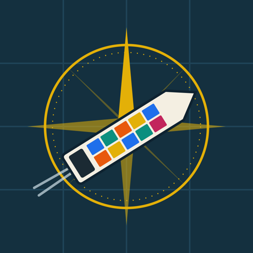

Shipping TycoonShipping Tycoon is a strategy game about world trade at sea, for iPhone and iPad. You draw shipping routes on the real map, keep cargo moving through canal blockades, wars and storms, and in the shipping company mode you build your own fleet and terminals. Here you find answers to common questions and how to reach us.Shipping Tycoon ist ein Strategiespiel über den Welthandel auf See, für iPhone und iPad. Du ziehst Schiffsrouten auf der echten Karte, hältst die Ladung trotz Kanalsperren, Kriegen und Stürmen in Bewegung und baust im Reederei-Modus deine eigene Flotte und eigene Terminals auf. Hier findest du Antworten auf häufige Fragen und erfährst, wie du uns erreichst.
Touch a port and drag to the next port with one finger. At the end of a route, keep dragging to extend it. Tap a route's pennant at the bottom of the screen to add ships, take ships off or dissolve the route. Two fingers zoom, one finger on open sea moves the map.
Tippe einen Hafen an und zieh mit einem Finger zum nächsten Hafen. Am Ende einer Route ziehst du weiter, um sie zu verlängern. Tippe unten auf den Wimpel einer Route, um Schiffe hinzuzufügen, abzuziehen oder die Route aufzulösen. Zwei Finger zoomen, ein Finger auf dem offenen Meer verschiebt die Karte.
Every container wants to go to a port with the same shape: circle, square or triangle. Oil drums go to ports with a refinery and only travel on tankers and gas carriers. Green reefer containers carry fresh goods: they spoil after 30 seconds at the quay, but stay fresh on board a reefer ship.
Jeder Container will zu einem Hafen mit derselben Form: Kreis, Quadrat oder Dreieck. Ölfässer gehen zu Häfen mit Raffinerie und fahren nur auf Tankern und Gastankern. Grüne Kühlcontainer sind Frischware: Am Kai verderben sie nach 30 Sekunden, an Bord eines Kühlschiffs bleiben sie frisch.
A situation report warns you about ten seconds ahead and marks the area in yellow. When the crisis breaks out, time slows down and you give your fleet an order: wait at anchor, reroute, sail in convoy, go full ahead, or send a salvage tug to clear a blocked canal. If you don't answer in time, the fleet takes the safe option.
Ein Lagebericht warnt etwa zehn Sekunden vorher und markiert das Gebiet gelb. Bricht die Krise aus, läuft die Zeit langsamer, und du gibst der Flotte einen Befehl: vor Anker gehen, Kurs ändern, im Konvoi fahren, volle Fahrt oder einen Bergungsschlepper zur Kanalsperre schicken. Antwortest du nicht rechtzeitig, wählt die Flotte die sichere Variante.
You start with a cash balance. Deliveries earn freight; fuel, crews, canal fees and loans cost money. You can buy or charter ships, trade commodities between ports, borrow from the bank, build terminals and design your own ships. Every week you get a balance sheet. You may run on credit, at 3 % interest a week. If your debt goes beyond the credit limit, your company goes bankrupt.
Du startest mit einem Kassenbestand. Lieferungen bringen Frachtgeld, Treibstoff, Crews, Kanalgebühren und Kredite kosten Geld. Du kannst Schiffe kaufen oder chartern, mit Rohstoffen zwischen Häfen handeln, bei der Bank Geld leihen, Terminals bauen und eigene Schiffe entwerfen. Jede Woche gibt es eine Bilanz. Du darfst auf Kredit fahren, zu 3 % Zins pro Woche. Gehen die Schulden über den Kreditrahmen hinaus, ist die Reederei bankrott.
Every day, all players get the same ports, cargo and crises. Compare your result with friends on the Game Center leaderboard, or share it from the end screen.
Jeden Tag spielen alle dieselben Häfen, Ladungen und Krisen. Vergleiche dein Ergebnis mit Freunden in der Game-Center-Rangliste oder teile es vom Schlussbildschirm aus.
Open the Settings app on your device, tap Game Center and sign in. The start screen of the game shows whether you are connected. Scores are submitted when a game ends.
Öffne die Einstellungen-App deines Geräts, tippe auf Game Center und melde dich an. Der Startbildschirm des Spiels zeigt, ob du verbunden bist. Ergebnisse werden am Ende einer Partie übertragen.
Use the note and speaker buttons on the start screen or next to the speed control in the game. The silent switch of your iPhone also mutes the game, and music from other apps keeps playing.
Nutze die Knöpfe mit Note und Lautsprecher auf dem Startbildschirm oder neben der Geschwindigkeit im Spiel. Auch der Stummschalter deines iPhones schaltet das Spiel stumm, und Musik aus anderen Apps läuft weiter.
The game is currently in German; more languages will follow in updates. It runs on iPhone and iPad with iOS 18 or later. One purchase covers both. There are no ads, no in-app purchases and no account.
Das Spiel ist zurzeit auf Deutsch, weitere Sprachen folgen mit Updates. Es läuft auf iPhone und iPad ab iOS 18. Ein Kauf gilt für beide. Es gibt keine Werbung, keine In-App-Käufe und kein Konto.
Apple handles all purchases. Request a refund at reportaproblem.apple.com.
Alle Käufe wickelt Apple ab. Eine Rückerstattung beantragst du unter reportaproblem.apple.com.